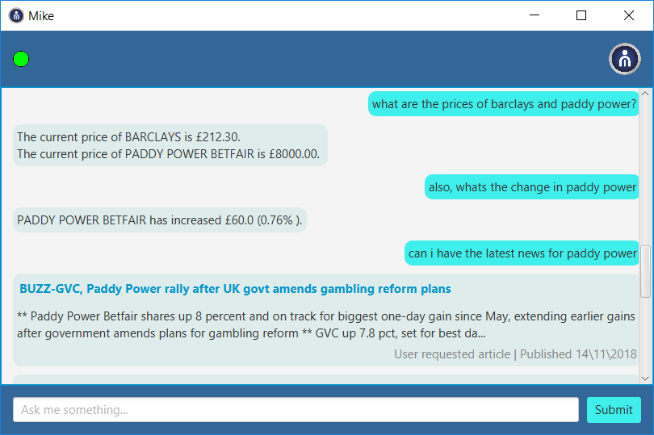

Mike - Virtual Trading Assistant
DateJanuary 2018 - March 2018
RoleProgrammer and Quality Assurance Manager
TechnologiesJava, SQL
DescriptionBuilt in collaboration with Deutsche Bank, this trading assistant is able to provide you with knowledge on the FTSE 100, as well as alert you to changes in your favourite stocks and major financial news. Mike learns from your interactions, becoming personalised to you and helping to improve your trading experience.

Features
- Query stock prices for FTSE 100
- Live news retrieval for FTSE 100 companies
- Learns popular queries for personalised information
- Voice and text input and output
- Responds to input in real-time
Questions
This program was developed as part of the CS261 Software Engineering course during my university degree, with the project specification set out by Deutsche Bank. Our six-person team had two and a half months to build the program and present it to Deutsche Bank.
Every member of our team had the responsibility of completing the various reports, and programming Mike. I had the added responsibility as Quality Assurance Manager to create and execute the test plan, passing back the problems with potential fixes to the rest of the team.
With each query to Mike, the companies and business sectors that are asked about are stored in a database (with a note of that user). Mike will then go through the database and run an algorithm to find the user's most commonly queried companies and sectors in a recent period. The resulting information is used to automatically perform queries as the user loads up Mike, or on request of their personalised information.
The hardest part (although very interesting) was developing the requirements and designs for the software based on the specification. Since some areas of the specification were poorly detailed, we had to compile a list of questions and ideas which could be taken to meetings that we scheduled with Deutsche Bank. Through this, we could get a clearer idea of what Deutsche Bank wanted in the project, and we could develop the product they wanted.
I think one of the main changes I would make would be to how the user inputted text is handled. Currently, the determine the intent of any queries it must be passed to an external API which returns the results. This offers very little flexibility besides what the API alows to the change (the keywords we are looking for). With more time it would be possible for us to implement our own methods to process the queries and extra relevant information (Python's NLTK offers may tools for this) - which then gives us more options with regards to what Mike can respond to.